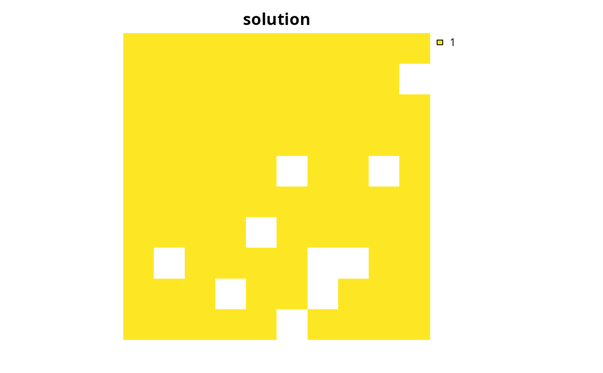

Check a conservation planning problem for potential issues
before trying to solve it. Specifically, problems are checked for (i) values
that are likely to result in "strange" solutions and (ii) values that are
likely to cause numerical instability issues and lead to unreasonably long
run times when solving it. Although these checks are provided to help
diagnose potential issues, please be aware that some detected issues may be
false positives. Please note that these checks will not be able to
verify if a problem has a feasible solution or not.
presolve_check(x) # S3 method for ConservationProblem presolve_check(x) # S3 method for OptimizationProblem presolve_check(x)
| x |
|
|---|
logical value indicating if all checks are passed
successfully.
This function checks for issues that are likely to result in "strange" solutions. Specifically, it checks if (i) all planning units are locked in, (ii) all planning units are locked out, and (iii) all planning units have negative cost values (after applying penalties if any were specified). Although such conservation planning problems are mathematically valid, they are generally the result of a coding mistake when building the problem (e.g. using an absurdly high penalty value or using the wrong dataset to lock in planning units). Thus such issues, if they are indeed issues and not false positives, can be fixed by carefully checking the code, data, and parameters used to build the conservation planning problem.
This function then checks for values that may lead to numerical instability issues when solving the problem. Specifically, it checks if the range of values in certain components of the optimization problem are over a certain threshold (i.e. \(1 \times 10 ^9\)) or if the values themselves exceed a certain threshold (i.e. \(1 \times 10^{10}\)). In most cases, such issues will simply cause an exact algorithm solver to take a very long time to generate a solution. In rare cases, such issues can cause incorrect calculations which can lead to exact algorithm solvers returning infeasible solutions (e.g. a solution to the minimum set problem where not all targets are met) or solutions that exceed the specified optimality gap (e.g. a suboptimal solution when a zero optimality gap is specified).
What can you do if a conservation planning problem fails to pass these
checks? Well, this function will have thrown some warning messages
describing the source of these issues, so read them carefully. For
instance, a common issue is when a relatively large penalty value is
specified for boundary (add_boundary_penalties) or
connectivity penalties (add_connectivity_penalties). This
can be fixed by trying a smaller penalty value. In such cases, the
original penalty value supplied was so high that the optimal solution
would just have selected every single planning unit in the solution---and
this may not be especially helpful anyway (see below for example). Another
common issue is that the
planning unit cost values are too large. For example, if you express the
costs of the planning units in terms of USD then you might have
some planning units that cost over one billion dollars in large-scale
planning exercises. This can be fixed by rescaling the values so that they
are smaller (e.g. multiplying the values by a number smaller than one, or
expressing them as a fraction of the maximum cost). Let's consider another
common issue, let's pretend that you used habitat suitability models to
predict the amount of suitable habitat
in each planning unit for each feature. If you calculated the amount of
suitable habitat in each planning unit in square meters then this
could lead to very large numbers. You could fix this by converting
the units from square meters to square kilometers or thousands of square
kilometers. Alternatively, you could calculate the percentage of each
planning unit that is occupied by suitable habitat, which will yield
values between zero and one hundred.
But what can you do if you can't fix these issues by simply changing
the penalty values or rescaling data? You will need to apply some creative
thinking. Let's run through a couple of scenarios.
Let's pretend that you have a few planning units that
cost a billion times more than any other planning
unit so you can't fix this by rescaling the cost values. In this case, it's
extremely unlikely that these planning units will
be selected in the optimal solution so just set the costs to zero and lock
them out. If this procedure yields a problem with no feasible solution,
because one (or several) of the planning units that you manually locked out
contains critical habitat for a feature, then find out which planning
unit(s) is causing this infeasibility and set its cost to zero. After
solving the problem, you will need to manually recalculate the cost
of the solutions but at least now you can be confident that you have the
optimal solution. Now let's pretend that you are using the maximum features
objective (i.e. add_max_features_objective) and assigned some
really high weights to the targets for some features to ensure that their
targets were met in the optimal solution. If you set the weights for
these features to one billion then you will probably run into numerical
instability issues. Instead, you can calculate minimum weight needed to
guarantee that these features will be represented in the optimal solution
and use this value instead of one billion. This minimum weight value
can be calculated as the sum of the weight values for the other features
and adding a small number to it (e.g. 1). Finally, if you're running out
of ideas for addressing numerical stability issues you have one remaining
option: you can use the numeric_focus argument in the
add_gurobi_solver function to tell the solver to pay extra
attention to numerical instability issues. This is not a free lunch,
however, because telling the solver to pay extra attention to numerical
issues can substantially increase run time. So, if you have problems that
are already taking an unreasonable time to solve, then this will not help
at all.
problem, solve, http://www.gurobi.com/documentation/8.1/refman/numerics_gurobi_guidelines.html, http://files.gurobi.com/Numerics.pdf.
# set seed for reproducibility set.seed(500) # load data data(sim_pu_raster, sim_features) # create minimal problem with no issues p1 <- problem(sim_pu_raster, sim_features) %>% add_min_set_objective() %>% add_relative_targets(0.1) %>% add_binary_decisions() # run presolve checks # note that no warning is thrown which suggests that we should not # encounter any numerical stability issues when trying to solve the problem print(presolve_check(p1))#> [1] TRUE# create a minimal problem, containing cost values that are really # high so that they could cause numerical instability issues when trying # to solve it sim_pu_raster2 <- sim_pu_raster sim_pu_raster2[1] <- 1e+15 p2 <- problem(sim_pu_raster2, sim_features) %>% add_min_set_objective() %>% add_relative_targets(0.1) %>% add_binary_decisions() # run presolve checks # note that a warning is thrown which suggests that we might encounter # some issues, such as long solve time or suboptimal solutions, when # trying to solve the problem print(presolve_check(p2))#> Warning: planning units with very high (> 1e+6) or very low (< 1e-6) non-zero cost values note this may be a false positive#> [1] FALSE# create a minimal problem with connectivity penalties values that have # a really high penalty value that is likely to cause numerical instability # issues when trying to solve the it cm <- adjacency_matrix(sim_pu_raster) p3 <- problem(sim_pu_raster, sim_features) %>% add_min_set_objective() %>% add_relative_targets(0.1) %>% add_connectivity_penalties(1e+15, data = cm) %>% add_binary_decisions() # run presolve checks # note that a warning is thrown which suggests that we might encounter # some numerical instability issues when trying to solve the problem print(presolve_check(p3))#> Warning: penalty multiplied connectivity values are very high#> [1] FALSE# \donttest{ # let's forcibly solve the problem using Gurobi and tell it to # be extra careful about numerical instability problems s3 <- p3 %>% add_gurobi_solver(numeric_focus = TRUE) %>% solve(force = TRUE)#> Warning: penalty multiplied connectivity values are very high#> Gurobi Optimizer version 9.0.1 build v9.0.1rc0 (linux64) #> Optimize a model with 581 rows, 378 columns and 1602 nonzeros #> Model fingerprint: 0xaaf590f0 #> Variable types: 0 continuous, 378 integer (378 binary) #> Coefficient statistics: #> Matrix range [2e-01, 1e+00] #> Objective range [2e+02, 1e+15] #> Bounds range [1e+00, 1e+00] #> RHS range [3e+00, 8e+00] #> Warning: Model contains large objective coefficients #> Found heuristic solution: objective -2.88000e+17 #> #> Explored 0 nodes (0 simplex iterations) in 0.00 seconds #> Thread count was 1 (of 4 available processors) #> #> Solution count 1: -2.88e+17 #> No other solutions better than -2.88e+17 #> #> Optimal solution found (tolerance 1.00e-01) #> Best objective -2.880000000000e+17, best bound -2.880000000000e+17, gap 0.0000%# plot solution # we can see that all planning units were selected because the connectivity # penalty is so high that cost becomes irrelevant, so we should try using # a much lower penalty value plot(s3, main = "solution", axes = FALSE, box = FALSE)# }